Как скачать VS Code?
Перейдите на официальный сайт и скачайте версию для вашей ОС.
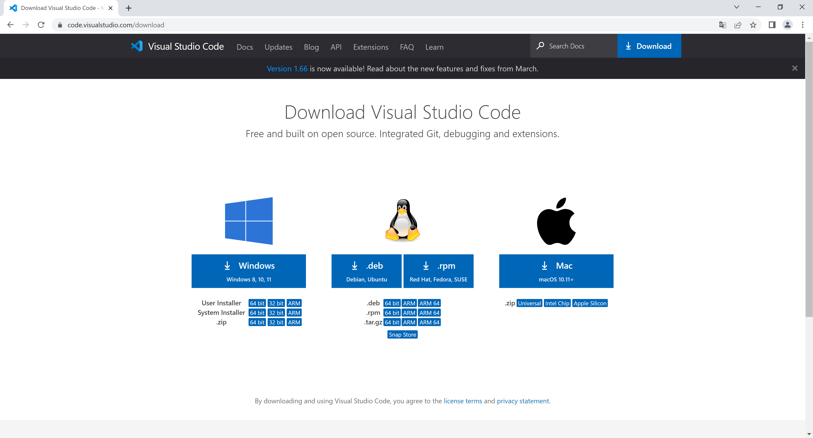Если вы используете Google Chrome, то скачанная программа окажется в левом нижнем углу. Запустите скачанный файл.
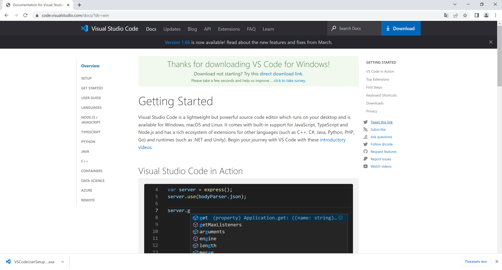Как установить VS Code?
При запуске установочного файла может появиться уведомление, что программа будет установлена только для текущего пользователя. Нажмите ОК.
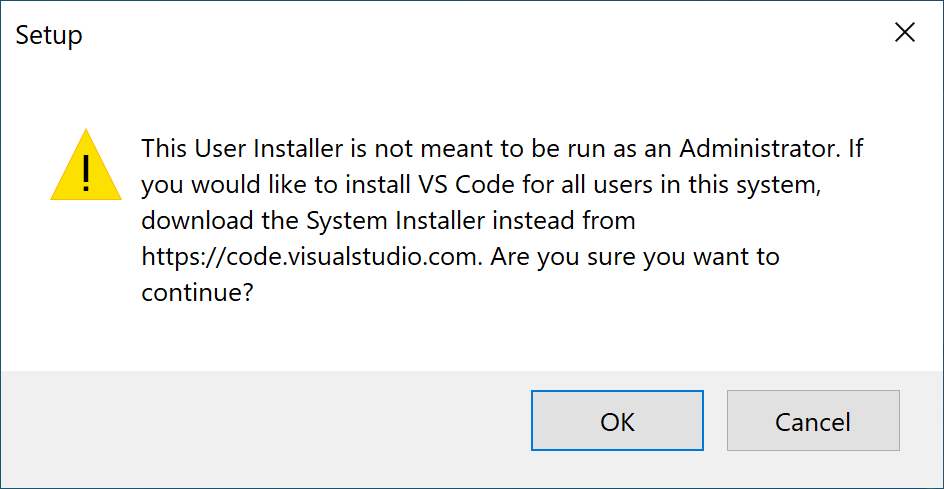Откроется стандартный установщик Windows.
Лицензионное соглашение
Примите лицензионное соглашение и нажмите кнопку Next.
Расположение установки
Измените путь установки программы. Путь по умолчанию можно не менять. Нажмите Next.
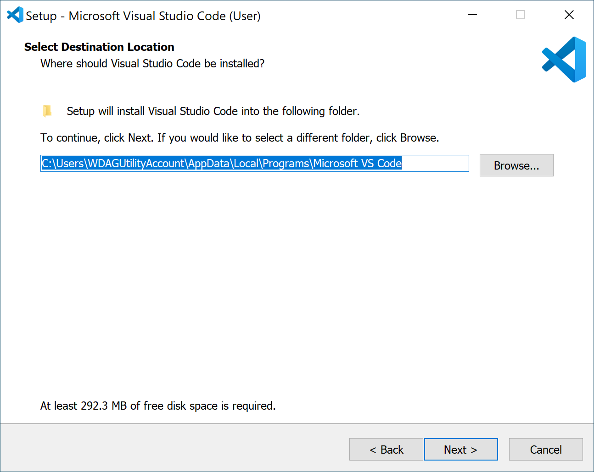Отображение установленной программы в меню Пуск
Если поставить галочку "Don't create a Start Menu folder", то в меню Пуск программа отображаться не будет.
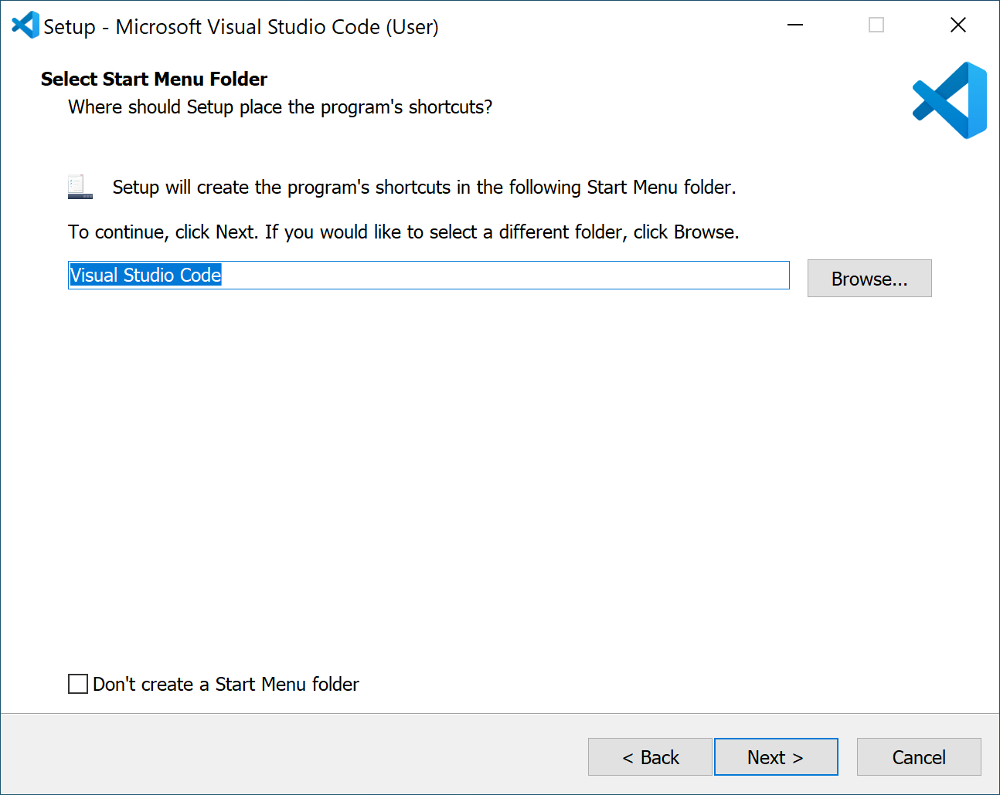Выбор опций
- Нужно ли отображать иконку приложения на рабочем столе после установки (по желанию)
- "Открыть с помощью Code" при клике ПКМ на файле или папке (крайне желательно!)
- "Открыть с помощью Code" при клике ПКМ по пустому месту в открытой папке (по желанию)
- Многие файлы начнут открывать в VS Code (пусть стоит:))
- Обязательный пункт!
Проверка готовности
Если всё устраивает, нажмите кнопку Install.
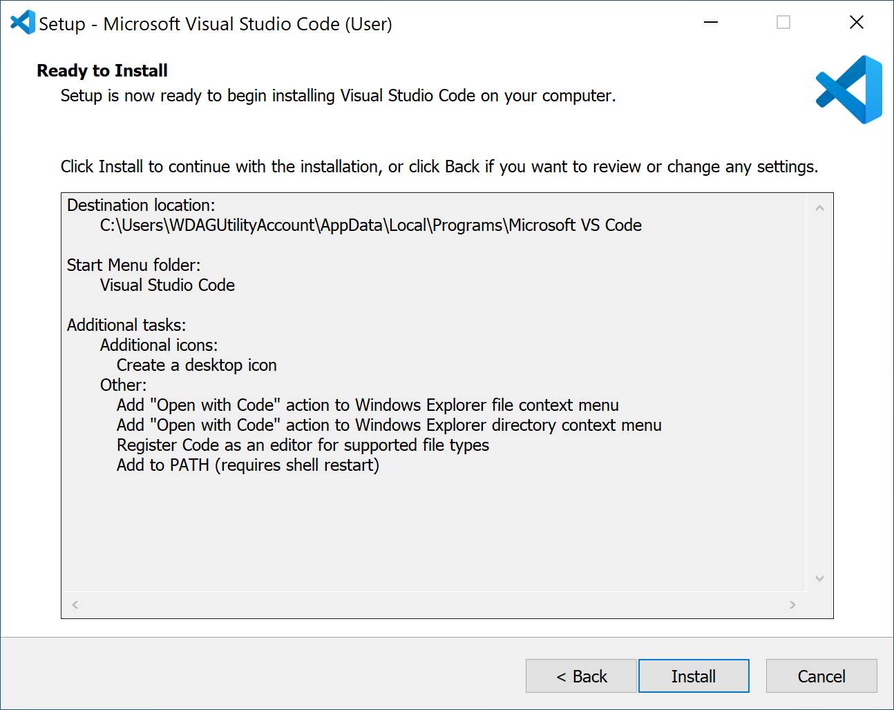Установка VS Code
Запустится стандартная установка, необходимо просто подождать
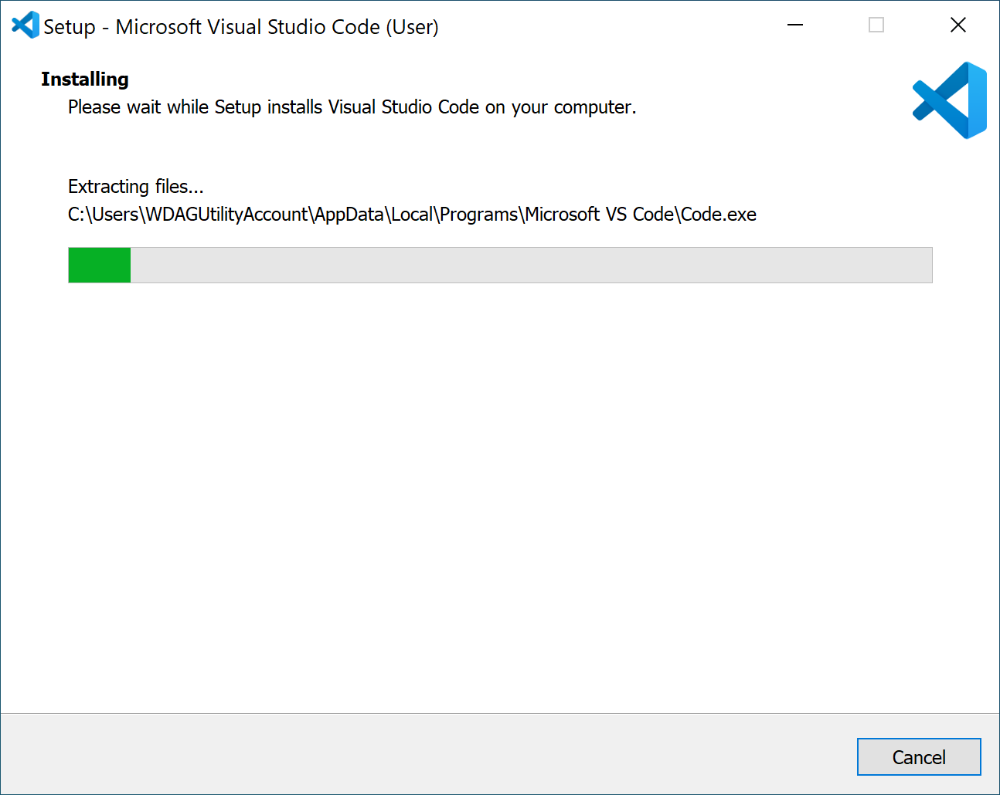Завершение установки
Если галочка отмечена, то после сразу откроется окно VS Code. Нажмите Finish.
Запустите программу любым способом.
Как создать и запустить сайт
Можно выделить основные этапы:
- Создание html-файлов
- Создание css-файлов
- Подключение CSS
- Добавление картинок (при неоходимости)
- Запуск
Экран приветствия
После первого запуска появится экран приветствия с возможностью выбора темы.
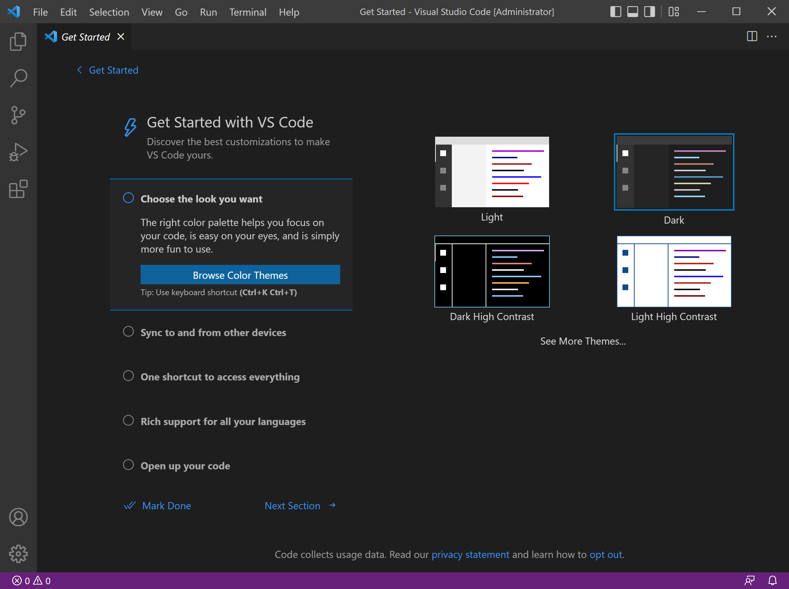Установка русского языка
В некоторых случаях программа сама предлагает установить русский язык. Если этого не произошло, то откройте расширения .
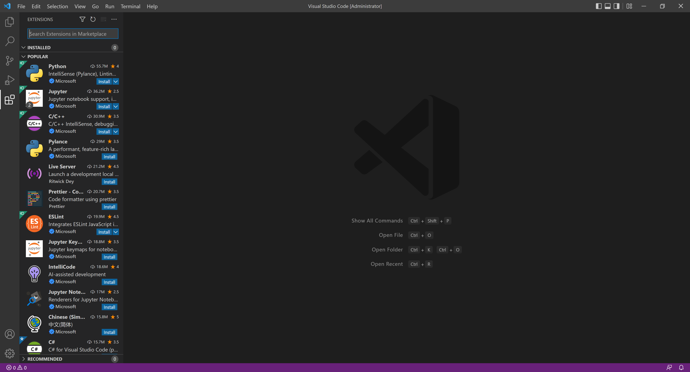Поиск расширений
Для того, чтобы найти расширение (дополнение), просто начните писать его название. Для поиска русификатора напишите: russian. Нажмите Install.
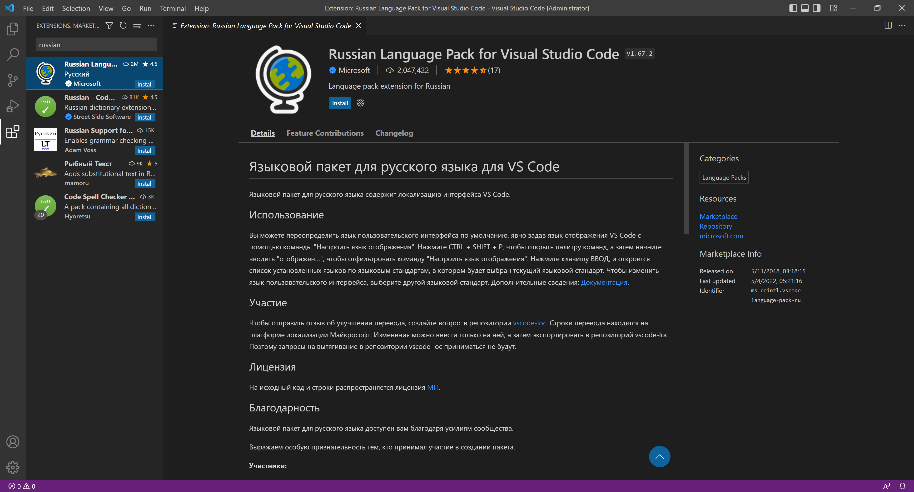Применение изменений
В правом нижнем углу появится всплывающее уведомление. Нажмите на синюю кнопку, запрашивающую перезагрузку VS Code для того, чтобы расширение вступило в силу.
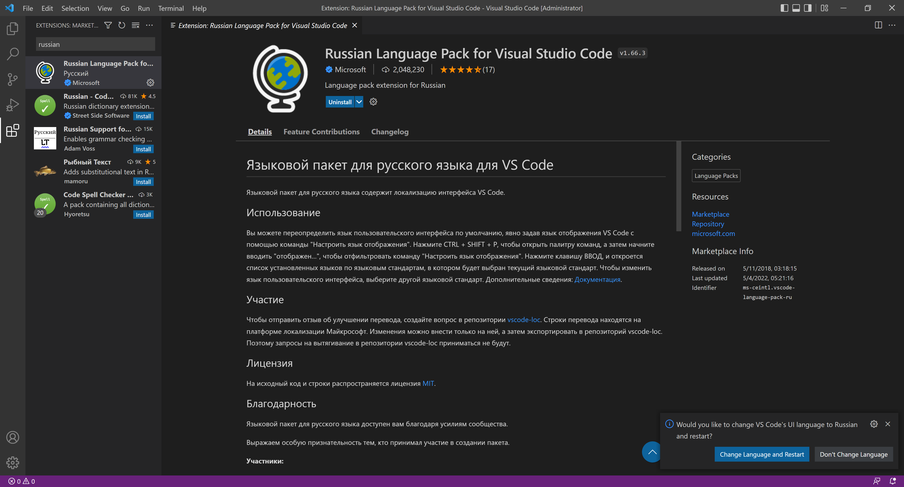Создание проекта
- Нажмите синюю кнопку Открыть папку в правом верхнем углу.
- Откройте меню Файл, выберите пункт Открыть папку.
Создание папки
В открывшемся окне перейдите в любое место, где будет храниться проект. Создайте новую папку, нажав на кнопку Новая папка или ПКМ по пустому месту Создать -> Новая папка.
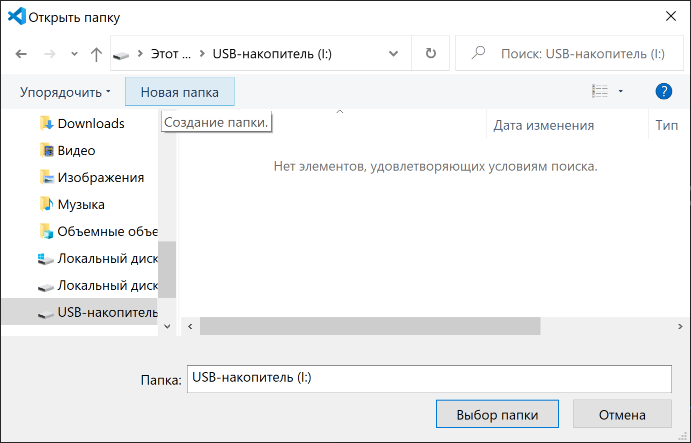Открытие проекта
Переименуйте папку по названию вашего проекта и нажмите Выбор папки. Второй способ открытия: нажмите ПКМ по папке, выберите пункт Открыть с помощью Code.
Доверие
При первом открытии появится запрос на то, доверяете ли вы содержимому данной папки. Отметьте галочкой, чтобы данное окно не появлялось снова и нажмите на синюю кнопку.
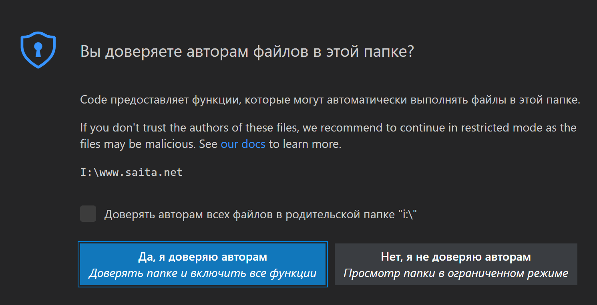Создание файлов проекта
После всех действий нужно создать необходимые файлы и папки.
Справа от названия проекта в разделе Explorer есть кнопки добавления файла или папки
Добавьте в проект:
- index.html - файл для главной страницы
- style.css - файл для стилей
- images - папка для изображений
Быстрое редактирование кода
VS Code поддерживает автодополнение тегов с расставлением скобочек. Напишите восклицательный знак и выберите пункт, в конце которого написано Emmet Abbreviation.
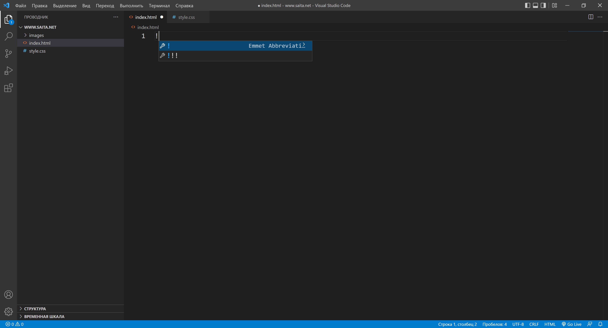VS Code допишет основную часть кода. Измените язык на русский в третьей строке, заменив “en” на “ru”, а также удалите строки, чтобы шаблон программы оказался как на скриншоте ниже.
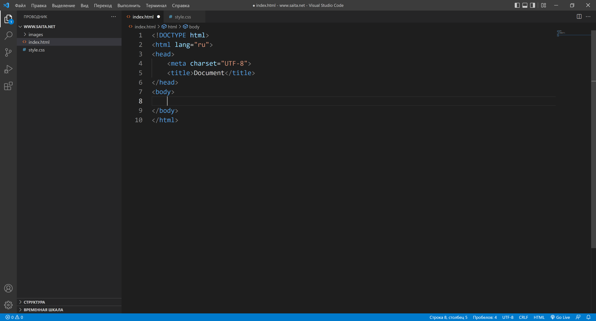Подключите файл со стилями. В теге head начните набирать тег li и выберите пункт link: css.
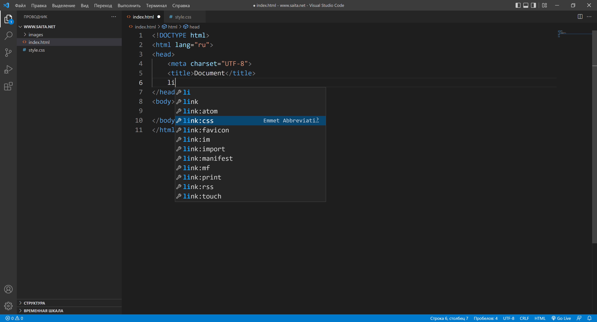Для запуска установите расширение Live Server. После установки нажмите на кнопку Go Live, находящуюся в правом нижнем углу. Предварительно сохраните все файлы, нажав CTRL+S.
Верстайте сайты с удовольствием!:)